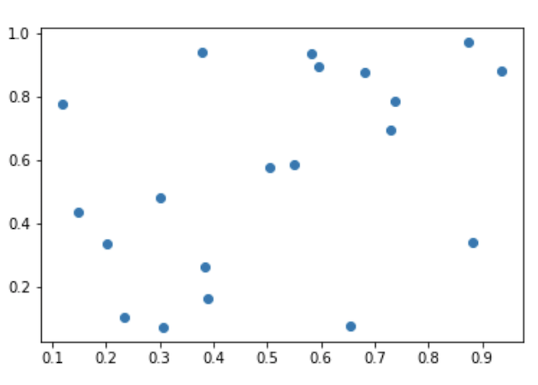
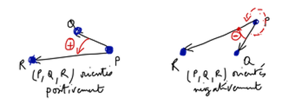
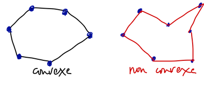
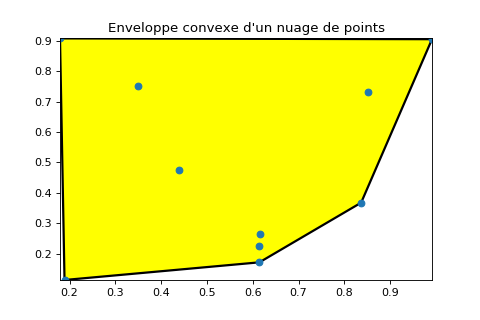
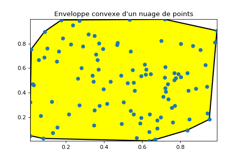
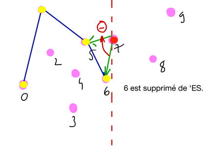
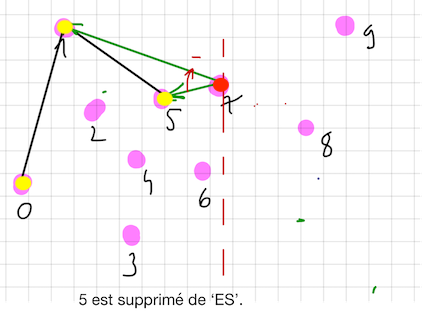
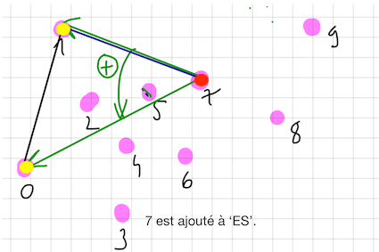

Feuille 3
Contents
4. Feuille 3#
L’objectif de ce TP est de calculer et tracer l’enveloppe convexe d’un nuage de points du plan. L’algorithme de ce calcul utilise des piles. Les notions utiles seront introduites au fur et à mesure.
Ce TP peut profiter d’une implémentation python du type de données abstrait pile LIFO.
Le travail demandé sera effectué dans un notebook jupyter basé sur ce sujet en format markdown.
Dans le notebook, les modules demandés pourront être codés par des fonctions ou des traitements regroupés dans une cellule. Dans ce dernier cas, ces cellules pourront être dupliquées (par recopie) “plus loin” dans le notebook.
Dans un second temps, les traitements demandés pourront être regroupé dans des fichiers python (
.py) exécutables dpuis la ligne de commande.
4.1. points: points du plan, relation d’ordre#
Un point du plan est un couple \((x, y)\) (de nombres flottants).
On définit la relation d’ordre suivante entre 2 points du plan :
$\((x,y) \le (x',y') \iff x < x' \text{ ou } (x = x' \text{ et } y \le y').\)$
Un nuage de points est un ensemble fini de points.
4.1.1. Question#
Concevoir et coder un module points qui permet de définir des points, de les comparer, d’afficher leurs coordonnées \((x,y)\) à l’écran.
4.2. nuage : nuage de points : générer, trier, afficher, stocker, tracer#
4.2.1. Question#
Ecrire un module nuage qui permet de définir un nuage de points de taille paramétrable et de d’afficher les coordonnées de ses points à l’écran.

4.2.2. Question#
Compléter ce module de façon à pouvoir générer aléatoirement un nuage de points de taille arbitraire et contenu dans le carré \([0,1] \times [0,1]\).
4.2.3. Question#
Compléter ce module de façon à pouvoir trier les points d’un nuage donné selon l’ordre croissant défini sur les points du plan.
4.2.4. Question#
Compléter ce module de façon à pouvoir enregistrer un nuage de points de taille arbitraire dans un fichier de texte.
La taille du nuage sera aussi enregistrée dans ce fichier.
Les fichiers data_nuage_10.txt et data_nuage_100.txt fournis dans l’archive 3-data-nuage.zip sont des exemples de tels fichiers.
4.2.5. Question#
Compléter ce module de façon à pouvoir lire un nuage de points de taille arbitraire à partir d’un fichier de texte selon le format défini ci-dessus.
4.2.6. Question#
Compléter ce module de façon à pouvoir tracer graphiquement un nuage de points donné. Le tracé sera effectué à l’écran par défaut. Il permettra aussi de stocker ce tracé dans un fichier jpeg.
On va développer progressivement un module geometrie2d.
4.3. geometrie2d: orientation de 3 points du plan#

Un triplet (p,q,r) de points non alignés du plan est orienté positivement si l’angle des vecteurs (pq, pr) est dans \(]0, \pi \ [\) (modulo \(2\pi\)). Sinon, il est orienté négativement.
On vérifie l’orientation du triplet (p,q,r) en calculant le signe du déterminant 2x2 \(det(pq,pr)\) des vecteurs pq et pr. Signe du déterminant et sens d’orientation coïncident.
On rappelle que : $\(det(pq,pr) = (x_q - x_p)\times(y_r - y_p) - (y_q - y_p)\times(x_r - x_p).\)$
4.3.1. Question#
Commencer le module geometrie2d avec une fonction qui calcule l’orientation d’un triplet de points du plan.
4.4. geometrie2d: enveloppe convexe supérieure#
Un ensemble \(C\) est convexe si le segment [p,q] qui relie deux points quelconques de \(C\) est inclus dans \(C\).

L’enveloppe convexe \(Conv(N)\) d’un nuage de points \(N\) est le plus petit polygone convexe qui contient tous les points de \(N\).
 
Construire l’enveloppe convexe d’un nuage de points. On construit \(Conv(N)\) en balayant de gauche à droite avec une droite verticale le nuage \(N\) (préalablement trié par ordre croissant). On convient ainsi que p0 est le plus petit point de N, ie. celui le plus à gauche.
Chaque point p rencontré par la droite met à jour l’enveloppe convexe du sous-nuage à gauche du point p. Cette mise à jour s’effectue en distinguant une partie supérieure et une partie inférieure de l’enveloppe convexe.
L’enveloppe supérieure est au dessus du segment [p0, p].
Cette enveloppe ES est modifiée par l’algorithme suivant qui justifie de stocker ES comme une pile de base p0.
On ajoute aussi à ES, p1 le point immédiatement supérieur à p0 (ie. immédiatement à droite de p0).
La pile ES est ainsi composée d’au moins deux éléments.
4.4.1. Algorithme#
Soit p le point rencontré par le balayage de N.
Notons q et r les deux derniers points ajoutés à ES – q est au sommet.
Si le triplet (p,q,r) est orienté positivement alors p est ajouté à
ES. Ce qui termine la mise à jour deES.Sinon q est retiré de
ESet on reprend le test d’orientation et le traitement précédent pour un nouveau triplet (p,q,r) jusqu’à terminer la mise à jour deES:par l’ajout de p à
ESou parce qu’il ne reste que p0 dans
ES. Dans ce cas, on termine en ajoutant p àES– qui est ainsi toujours composée d’au moins deux éléments.
ES contient l’enveloppe convexe supérieure du nuage N une fois tous les points p de N balayés.
On convient aisément que le point le plus à droite de N est le dernier point ajouté à ES.
Illustration graphique.
ES = {0,1,5,6}, début du traitement de p = 7

ES = {0,1,5}, p = 7

ES = {0,1}, p = 7

ES = {0,1,7}, fin du traitement de p = 7.
4.4.2. Question#
Compléter le module précédent avec une fonction majES(pile, point) qui effectue la mise à jour de la pile ES lors du traitement du point p.
4.4.3. Question#
Valider cette fonction sur des nuages de 4 ou 5 points par exemple.
4.5. geometrie2d: enveloppe convexe inférieure#
L’enveloppe convexe inférieure est obtenue de façon similaire avec une (autre) pile ‘EI’ et un test d’orientation inverse.
4.5.1. Question#
Compléter le module précédent avec une fonction majEI(pile, point) qui effectue la mise à jour de la pile ‘EI’ lors du traitement du point p.
4.5.2. Question#
Valider cette fonction sur des nuages de 4 ou 5 points par exemple.
4.6. geometrie2d: enveloppe convexe#
L’enveloppe convexe \(Conv(N)\) est une (autre) pile construite à partir de ES et ‘EI’ en stockant successivement chaque point visité par les 2 parcours suivants :
L’enveloppe convexe supérieure est parcourue de la gauche vers la droite,
l’enveloppe convexe inférieure est parcourue de la droite vers la gauche;
et modifié comme suit :l’extrémité droite de l’une et de l’autre de ces enveloppes n’est pas répétée,
le sommet de \(Conv(N)\) répète sa base p0.
4.6.1. Question#
Compléter le module précédent avec une fonction env_convexe(nuage) qui construit l’enveloppe convexe d’un nuage de points arbitraire.
4.6.2. Question#
Compléter le module précédent avec une fonction qui permet d’afficher l’enveloppe convexe ainsi construite.
4.6.3. Question#
Compléter le module précédent avec une fonction qui permet de tracer graphiquement cette enveloppe convexe, d’abord sans le nuage de points associé, puis avec.